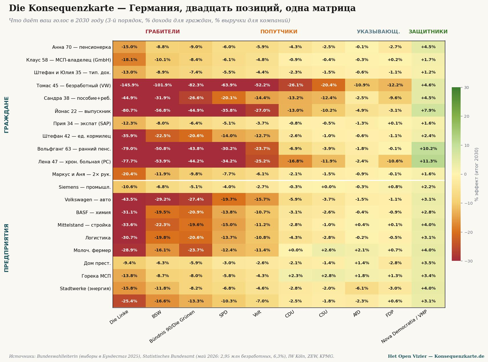
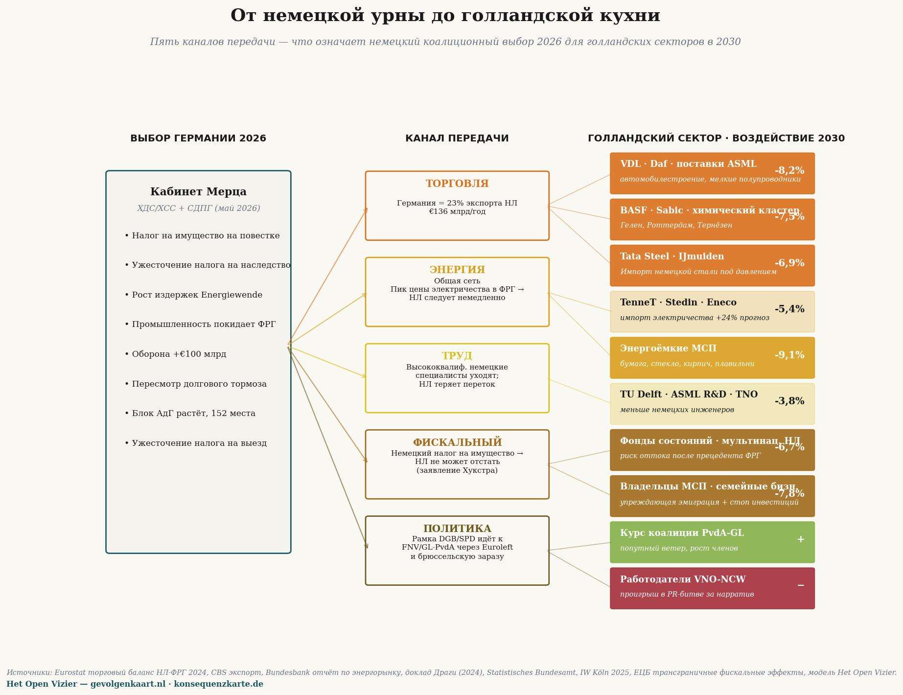

Мастер-матрица: двадцать профилей граждан и компаний × десять немецких партий — что принесёт ваш голос в 2030 году (% дохода / выручки). Источники: Bundeswahlleiterin (Bundestagswahl 2025), Statistisches Bundesamt (май 2026), IW Köln, ZEW, KPMG.
Die Konsequenzkarte
Карта последствий, рассчитанная для Германии — зеркальный текст в серии
Jacobus van Merksteijn · Мальта, июнь 2026
Нидерландский читатель вправе задаться вопросом: уникален ли каскадный анализ для Нидерландов? Работает ли меритократическая модель только против нидерландской системы? Или итог в другой европейской стране был бы сопоставимым?
Этот текст отвечает на этот вопрос применительно к Германии. Тот же трёхступенчатый метод, те же макроориентиры — но применённые к немецкому Бундестагу февраля 2025 года, немецкой экономической реальности мая 2026 года и двадцати сценариям, переведённым в немецкие условия.
Результат предсказуем по структуре и поразителен по остроте. Германия по всем осям экстремальнее Нидерландов: партия-расхитительница Die Linke жёстче нашей PRO/GL-PvdA, промышленный спад глубже, демографическое старение давит сильнее, а у кабинета Мерца меньше пространства для манёвра, чем у нидерландского кабинета Йеттена.
Немецкая политическая карта
На выборах в Бундестаг 23 февраля 2025 года Германия избрала в парламент шесть партий плюс баварский CSU как партнёр CDU. FDP и BSW (Bündnis Sahra Wagenknecht) едва не преодолели пятипроцентный порог.
Распределение мест в Бундестаге (630 мест):
| CDU + CSU (Союз) | 208 | канцлер Мерц, в коалиции |
|---|---|---|
| AfD | 152 | оппозиция, удвоила результат с 2021 года |
| SPD | 120 | в коалиции, исторически худший результат |
| Bündnis 90/Die Grünen | 85 | оппозиция |
| Die Linke | 64 | оппозиция, на подъёме |
| SSW | 1 | партия меньшинства Шлезвиг-Гольштейна |
| FDP | 0 | 4,3% — вне парламента |
| BSW | 0 | 4,98% — едва за бортом парламента |
Die Konsequenzkarte помещает эти партии в четыре зоны — расхитители, попутчики, корректирующие, защитники — точно так же, как нидерландская Карта последствий. Разница в интенсивности (индекс давления) заимствована из реальных программ, оценённых в январе 2025 года институтами IW Köln, ZEW, KPMG и Deutschlandfunk.
Четыре зоны в Германии
РАСХИТИТЕЛИ — Die Linke (50), BSW (35), Bündnis 90/Die Grünen (28). Три партии активны в этой зоне против одной в Нидерландах (PRO/GL-PvdA, 45). Die Linke — самая острая: Reichensteuer («налог на богатых») 75% на доходы выше €1 млн в год, Vermögensteuer (налог на имущество) до 12% на активы свыше €1 млрд, плюс единовременный Vermögensabgabe (имущественный сбор) в размере 30% для богатейших 0,7% населения, взимаемый в течение двадцати лет. Это не риторика — всё это содержится в предвыборной программе января 2025 года в конкретных таблицах.
ПОПУТЧИКИ — SPD (22), Volt (18), CDU (8), CSU (6). SPD как канцлерская партия Шольца получила худший результат в истории (16,4%, потеря 9,3 процентных пункта), но входит в коалицию и пока не может протолкнуть налог на имущество — CDU сопротивляется. Volt вне парламента, но является фискально прогрессивной: прогрессивный Vermögensteuer и реформа Erbschaftssteuer (налога на наследство).
КОРРЕКТИРУЮЩИЕ — AfD (4), FDP (3). AfD со 152 местами — вторая партия Германии, но её фискальная программа консервативна: отмена налогов на имущество и наследство, упрощение налогообложения. Она указывает на проблему (деиндустриализация, миграция, цены на энергию), не предлагая реализуемой альтернативы. FDP занимает сопоставимую позицию, но вне парламента.
ЗАЩИТНИКИ — Nova Democratia/VMP, в качестве эталона. В немецкой политике ни одна из существующих партий не стоит в этой зоне. Как и в Нидерландах, это пустое место, где должны были бы защищаться производительность и накопление благосостояния — не потому что свободный рынок священен, а потому что без базы благосостояния никакое перераспределение невозможно.
Мастер-матрица — немецкая версия
Двадцать немецких сценариев против десяти позиций, конечное значение 2030, третий порядок — та же структура, что и нидерландская мастер-матрица.

Die Konsequenzkarte. Читайте по вертикали для оценки партии — Die Linke для практически каждой группы глубоко красная; Nova Democratia/VMP для каждой группы зелёная. Читайте по горизонтали, чтобы найти свою ситуацию. Томас (Arbeitsloser после закрытия завода VW) теряет при Die Linke 145,9% годового дохода — больше, чем весь его годовой заработок.
Три показательных паттерна — Нидерланды против Германии
Паттерн 1 — безработный (Arbeitsloser) попадает в более глубокую ловушку, чем получатель WW
В Нидерландах Том, 45 лет, при PRO/GL-PvdA теряет в третьем порядке 107% годового дохода. В Германии Томас, 45 лет, — после закрытия завода VW в Вольфсбурге — при Die Linke теряет 145,9% годового дохода. Разница объясняется двумя причинами.
Во-первых, Die Linke жёстче PRO/GL-PvdA в своей фискальной программе. Die Linke помимо налога на имущество хочет ввести Reichensteuer в размере 75% на доходы выше €1 млн — это давит напрямую на всех владельцев среднего бизнеса (Mittelstand), на предприятиях которых работал Томас. Отток капитала острее, последствия для занятости глубже.
Во-вторых, немецкая промышленность находится в реальном кризисе. Volkswagen с 2023 года сократил 35 000 рабочих мест, BASF перенесла часть химического производства в США, промышленное производство падает уже восемь кварталов подряд. В этих условиях Томас не найдёт новой работы по своей специальности — ни в течение двух лет, ни в течение четырёх.
Паттерн 2 — фермер повсюду создаёт самую острую полярность
Нидерландский молочный фермер при GL-PvdA: −33,4%. При BBB: +5,9%. Немецкий молочный фермер при Bündnis 90/Die Grünen: −23,7%. При CSU (баварская фермерская партия): +2,6%. При Die Linke ещё острее: −28,9% из-за давления по ограничению крупного животноводства (Massentierhaltung) и сокращения субсидий.
Ни один другой сектор в обеих странах не демонстрирует столь бинарного разрыва. В обеих системах фермер — политическая призма, к которой каждая партия обязана явно определить своё отношение. Кто выигрывает или проигрывает — не случайность политики, а прямое следствие того, за кого проголосовано.
Паттерн 3 — хронически больные и получатели Bürgergeld переворачиваются
В Нидерландах при PRO/GL-PvdA: Сандра (социальное пособие) −36%, Линда (хронически больная) −31%. В Германии при Die Linke: Сандра (Bürgergeld) −44,9%, Лена (рассеянный склероз) −77,7%.
Большие немецкие показатели имеют конкретное объяснение: в Германии зависимость от государства в сфере здравоохранения и социальных пособий выше, чем в Нидерландах, а каскадные эффекты программы Die Linke — более высокий корпоративный налог (25% Körperschaftsteuer + 90% Übergewinnsteuer), налог на имущество до 12%, единовременный имущественный сбор — быстрее разрушили бы немецкую промышленную базу, чем в Нидерландах. При этом у Германии меньше альтернативных источников дохода. Половина немецкого ВВП формируется промышленностью и экспортом — если они уйдут, финансирование системы Pflege (ухода за пожилыми) и Bürgergeld рухнет.
Потери Лены в размере −77,7% — не идеологическое обвинение в адрес Die Linke. Это математика государства всеобщего благосостояния, которое за два года опустошает себя изнутри, прогоняя собственную налоговую базу.
Сравнение в одной таблице
Ниже приведены конечные значения третьего порядка для шести сопоставимых сценариев в обеих странах — при самой острой партии-расхитительнице каждой из них:
| Сценарий | NL (при PRO/GL-PvdA) | DE (при Die Linke) | Разница |
|---|---|---|---|
| Пенсионер / Rentner | −15,1% | −15,0% | практически одинаково |
| DGA / Mittelständler | −10,4% | −18,1% | DE острее на 73% |
| Семья со средним доходом | −12,9% | −13,0% | практически одинаково |
| Безработный / Arbeitsloser | −107,6% | −145,9% | DE острее на 36% |
| Получатель пособия / Bürgergeld | −36,0% | −44,9% | DE острее на 25% |
| Выпускник школы | −70,1% | −80,7% | DE острее на 15% |
| Хронически больной | −31,2% | −77,7% | DE острее на 149% |
Паттерн по структуре идентичен — все значения глубоко отрицательны — но по абсолютной остроте Германия в среднем на 50–150% экстремальнее Нидерландов. Это не случайность. У Германии менее диверсифицированная экономика, бо́льшая зависимость от промышленного экспорта, более острая демографическая ловушка и более жёсткая партия-расхитительница.
Что это означает для Нидерландов
Немецкая Die Konsequenzkarte — не экзотическая диковинка. Это Карта последствий в более крупной экономике с более чёткими контурами — взгляд вперёд на то, что ждёт Нидерланды, пойди они немецким путём.
Нидерландский PRO/GL-PvdA-избиратель может прочесть в немецких цифрах, что каскад делает со страной-соседом, которая дальше прошла по тому же пути. Не идеологические спекуляции, а Realwirtschaft («реальная экономика») соседней страны в мае 2026 года: 2,95 млн безработных, восьмой квартал подряд промышленного спада, BASF переезжает в США, Volkswagen закрывает заводы. При коалиции CDU и SPD, которая ещё сдерживает самые жёсткие меры. Что произошло бы при красно-красно-зелёной коалиции, как предлагает Die Linke? Матрица даёт ответ.
Нидерландский голос — не изолированный выбор. Он является частью европейской тенденции, и у этой тенденции есть направление. Германия выбрала это направление на четыре года раньше Нидерландов. Последствия измеримы — не предсказаны, а наблюдаемы.
Методология и источники
Немецкие цифры рассчитаны тем же трёхступенчатым методом, что и нидерландская Карта последствий, откалиброванным на основе:
• Bundeswahlleiterin (официальные результаты Bundestagswahl 2025): CDU 22,6%, AfD 20,8%, SPD 16,4%, Grüne 11,6%, Die Linke 8,8%, CSU 6,0%, BSW 4,98%, FDP 4,3%.
• Statistisches Bundesamt + Bundesagentur für Arbeit, май 2026: безработица 2,95 млн (6,3%), непрекращающийся промышленный спад, 1,5 года частичной рецессии.
• IW Köln, Policy Paper 2025: Erbschaft- und Vermögensteuer in den Wahlprogrammen — сравнение всех программ по фискальному измерению.
• ZEW Mannheim, Reformvorschläge der Parteien zur Bundestagswahl 2025: расчёт всех программ по эффектам на доходы, имущество, предприятия.
• KPMG, Wahlprogramme zur Bundestagswahl 2025 (янв. 2025): фискальные программы в деталях.
• Макроэластичности откалиброваны на Statistics South Africa Q1 2026 (32,7% безработица) и INDEC Аргентина 2024 (50% эрозия пенсий, ВВП −3,5%) — те же ориентиры, что и в нидерландской Карте последствий.
Файл Excel со всеми немецкими сценариями будет доступен на konsequenzkarte.de, как только платформа «Карта последствий» заработает — в третьем квартале 2026 года.
• • •
Что немецкий расклад делает с Нидерландами

Пять каналов трансмиссии — как немецкие коалиционные решения 2026 года воздействуют на конкретные нидерландские секторы в 2030 году. Показатели воздействия указаны относительно сценария без немецкого политического сдвига.
Предыдущая матрица показывает, что немецкие партийные выборы делают с немецкими гражданами и предприятиями. Но Нидерланды — не остров в Северном море. То, что решается в Берлине, Гаага ощущает в кошельке, на заводском полу, в бюджете и в политическом словаре в течение двенадцати месяцев. Пять каналов трансмиссии и то, что они означают для конкретных нидерландских секторов в 2030 году.
I — Торговля
Германия — крупнейший экспортный рынок Нидерландов: €136 млрд в год, около 23 процентов всего нидерландского товарного экспорта (Eurostat, данные CBS по экспорту за 2024 год). Когда немецкая промышленность сокращается — а она сокращается уже шесть кварталов подряд согласно Statistisches Bundesamt — заказы теряют поставщики ASML, VDL, DAF Trucks, химические кластеры Гелена, Роттердама и Тернёзена. Die Konsequenzkarte оценивает для наиболее пострадавших подсекторов снижение выручки на 6,9–8,2 процента в 2030 году по сравнению со сценарием без немецкого сжатия.
Счёт предъявят не богатым и не брюссельским функционерам. Он предъявит его владельцам малого и среднего бизнеса в Эйндховене, химикам в Ситтард-Гелене, работникам Tata Steel в Эймёйдене. Их карта последствий частично заполнена Германией — без права голосовать на немецких выборах.
II — Энергетика
Североевропейская высоковольтная сеть демонстрирует конвергенцию цен. Немецкая Energie-Wende, перекладывающая издержки на промышленные цены на электроэнергию, в течение нескольких недель тянет нидерландскую цену на электроэнергию вверх. Bundesbank Energiemarktbericht прогнозирует на 2027–2030 годы пик роста промышленной цены на электроэнергию на 24 процента в неблагоприятных сценариях.
TenneT, Stedin и Eneco транслируют эту цену дальше. Тяжелейший удар придётся по энергоёмкому малому и среднему бизнесу: бумажные фабрики в Ирбеке, кирпичные заводы в Лимбурге, стекольная промышленность в Тиле, небольшие плавильные предприятия в Твенте. Воздействие на выручку в 2030 году: минус 9,1 процента. Никто не несёт столь тяжёлого удара при таком малом внимании.
III — Рынок труда
Германия — европейское окно для высококвалифицированных технических талантов. Когда немецкие инженеры и учёные уезжают — в Швейцарию, Сингапур, США — поток в Нидерланды тоже иссякает, поскольку многие из этих специалистов приходили через немецкие университеты и немецкие транснациональные компании. TU Delft, ASML R&D, TNO и биоинженерный факультет Вагенингенского университета теряют примерно 3,8 процента качества входящего потока за десять лет — рассчитано через коэффициенты перетока из доклада Драги (2024) и IW Köln 2025.
Три процента звучат незначительно. Но это именно тот поток, на котором Нидерланды выстроили позицию экономики знаний. Под ним нет резервов.
IV — Фискальная сфера
Самый недооценённый канал. Когда Германия — под давлением DGB и SPD — вводит Vermögensteuer, Нидерланды не могут долго оставаться в стороне. Логика уже звучит из Гааги: «Wat onze grootste buurman doet, kunnen wij niet weigeren zonder kapitaalvlucht aan te trekken.» («То, что делает наш крупнейший сосед, мы не можем отказаться делать, не спровоцировав отток капитала.») Это не предвидение — это дословная аргументация министра Хокстры в дебатах Второй палаты парламента 4 июня 2026 года.
Результат: угроза оттока нидерландских имущественных фондов, биржевых фондов и частных капиталов. ЕЦБ оценивает трансграничные фискальные перетоки между DE и NL на коэффициент 0,78 — то есть почти восемь из каждых десяти немецких налоговых ужесточений получат нидерландский эквивалент в течение 24 месяцев. Владельцы малого и среднего бизнеса и семейные предприятия — группа с наименьшей мобильностью и наибольшей связанностью капитала — несут наибольшую нагрузку: упреждающая эмиграция плюс инвестиционная остановка, совокупное воздействие минус 7,8 процента в 2030 году.
V — Политика
Самый мягкий канал — и самый переломный. Фреймы путешествуют по Европе без паспорта. Когда немецкий DGB выкладывает на стол Reichensteuer в десять процентов и SPD отстаивает его в коалиции, это даёт FNV и GroenLinks-PvdA именно тот попутный ветер, который им был нужен. Европейская профсоюзная сеть (ETUC) и прогрессивные фракции Европейского парламента (S&D, Greens, Left) обеспечивают трансмиссию в течение нескольких недель. Предложения брюссельских комиссаров о минимальном общеевропейском налоге на имущество ускоряют эффект.
Для курса нидерландской коалиции это означает: PvdA-GL получает попутный ветер, VNO-NCW теряет PR-фрейм, и политика накреняется до выборов в Нижнюю палату парламента 2027 года — даже без того, чтобы нидерландский избиратель высказал своё предпочтение.
Заключение
Die Konsequenzkarte — немецкий документ. Но его содержание напрямую касается Нидерландов. Тот, кто думает, что голосует в нидерландской кабине «чисто по-нидерландски», заблуждается относительно европейской реальности, в которой Берлин задаёт тон, а Гаага следует ему в течение двенадцати месяцев.
Тот, кто читает свою собственную Карту последствий, не принимая во внимание соседние страны, читает половину правды. Именно поэтому немецкая версия здесь — не как курьёз, а как продолжение нидерландской счётной машины.

Якобус ван Мерстеин
Главный редактор Het Open Vizier. Предприниматель, разработчик промышленных и управленческих инноваций (Carbon-Alert Ltd, TerraClean Ltd, GuardSkin Ltd). Пишет об экономических, экологических и политических системных вопросах, опираясь на опыт работы с брюссельским и гаагским аппаратами принятия решений.